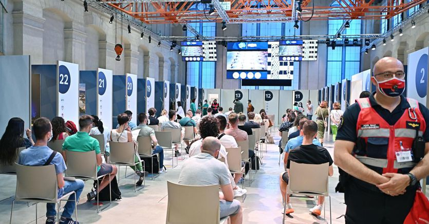

50:16 · 6 OPERE
La perdita della ragione e l’elogio della normalità.
Il filo del discorso
Il compito della cultura viene presentato attraverso la figura di una guida: chi conosce meglio un percorso può accompagnare gli altri senza essere per questo una persona di maggiore valore. Da questa distinzione Dr Divago passa alla lettura di un articolo di Domenico Conversa, apprezzandone la richiesta di rendere esplicite le premesse di un argomento giuridico. Il confronto riguarda il Green Pass nel dibattito del luglio 2021. La scheda segue il rapporto fra logica, prove, proporzionalità e responsabilità, distinguendo il commento politico da una decisione giudiziaria. Le premesse sanitarie della lettura vengono sottoposte a riscontro, senza trattare numeri non contestualizzati o testimonianze cliniche come dimostrazioni conclusive. La parte finale interroga il conformismo, la paura e la possibilità di mantenere un rapporto critico con il linguaggio pubblico, fino al richiamo a Platone e Dante. I giudizi su persone, istituzioni e mezzi di informazione restano attribuiti al relatore; le metafore psichiatriche non sono adottate come diagnosi. La richiesta di discutere le ragioni di una norma conserva il proprio interesse anche quando le conclusioni del commento dipendono da dati incompleti o da passaggi contestabili.
I libri nel discorso
Il green-pass: la perdita della ragione e l’elogio della normalità
Fotografia illustrativa dell’articolo, non copertina di libro: Articolo pubblicato il 22 luglio 2021 nel sito dell’autore; il corpo del testo contiene il riferimento al 21 luglio. L’immagine originale della pagina è una fotografia illustrativa di uno smartphone con certificazione verde davanti a un tabellone aeroportuale, non una copertina di libro o una riproduzione del testo. Nessun ISBN.
Illustrazione pubblicata nella pagina originale dell’articolo. Non documenta una edizione cartacea né un titolo editoriale ulteriore.
Titolo e autore espliciti; lettura commentata del testo centrale.
Passaggio 13:11 ↗ · Fonti e libro ↗L’obbligo vaccinale tra etica e diritto
Immagine illustrativa dell’articolo, non copertina di libro: Articolo del sito dell’autore, 15 giugno 2021. Fotografia illustrativa originale della pagina con flaconi e siringhe; non copertina di un libro e non prova della composizione di un vaccino specifico. Nessun ISBN.
Illustrazione pubblicata nella pagina originale dell’articolo. La scheda non riproduce il testo integrale e non attribuisce al filmato la lettura completa di questo precedente articolo.
Titolo del precedente articolo pronunciato durante la lettura; link originale riscontrato.
Passaggio 14:24 ↗ · Fonti e libro ↗
Ecco perché il Green pass è costituzionale e può limitare alcune libertà
Fotografia Ansa associata all’articolo del Sole 24 Ore: Il Sole 24 Ore, sezione Commenti, 17 luglio 2021. Immagine originale associata alla pagina, con un centro vaccinale e persone in attesa; credito Ansa indicato nei metadati. Non copertina di libro e non immagine di un altro articolo.
Fotografia della precisa pagina AEJMz XX; titolo, firma e data riscontrati sulla fonte originale. Non implica che gli autori condividano la critica del relatore.
Autori, titolo e data 17 luglio 2021 espliciti, verificati sulla pagina originale.
Passaggio 14:33 ↗ · Fonti e libro ↗
Costituzione della Repubblica Italiana
Copertina dell’edizione Intra aggiornata al 2023: Intra · 2023 · introduzione di Umberto Vincenti
Copertina autentica del testo integrale, aggiornata alla legge costituzionale 26 settembre 2023 n.1. È successiva al filmato del 2019 e non rappresenta la versione storica letta dal relatore. Umberto Vincenti firma l’introduzione.
Articolo32 della Costituzione citato espressamente e discusso nel commento.
Passaggio 26:14 ↗ · Fonti e libro ↗
La Repubblica
Identificazione probabile
Copertina: Laterza · La Repubblica · edizione con testo a fronte di riferimento
Immagine associata all’ISBN di riferimento e controllata visivamente; edizione e traduzione non identificate come quelle citate o lette nel video.
Metafora riconoscibile della caverna, Repubblica VII; il titolo non è pronunciato in quel passaggio.
Passaggio 44:05 ↗ · Fonti e libro ↗
Divina Commedia
Copertina: Giunti Barbera · Passepartout, 2021 · edizione di riferimento
Citazione conclusiva riconoscibile di Inferno XXVI,119–120; trascrizione automatica normalizzata senza riprodurre versi aggiuntivi.
Passaggio 49:58 ↗ · Fonti e libro ↗